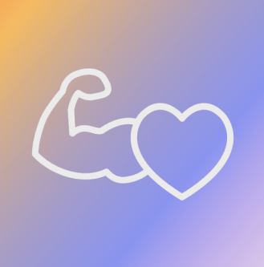

iNutri: Sua alimentação na palma das mãos
Aplicativo responsável por realizar o papel nutricional,
é ideal para quem busca uma vida saudável sem sair de casa.
O aplicativo tem a função de melhor sua alimentação e mudar
mudar todos hábitos alimentares ruins.
Dentro do app, você vai encontrar:
- Controle nutricinal
- Controle de peso e altura
- Sugestão de dietas
- Rotinas de treinos

iGym: Uma nova forma de treinar
O iGym, é um aplicativo que traz uma nova experiência durante os treinos. Quer melhorar melhorar seus resultados? Baixe o iGym e comece agora mesmo
*Para uma melhor experiência, é recomendado usar o OrangeWatch
Dentro do app, você vai encontrar:
- Timer
- Medidor de BPM
- Medidor de O²
- Cálculo de carga e RPM
- Contador de passos
- Rotinas de treinos